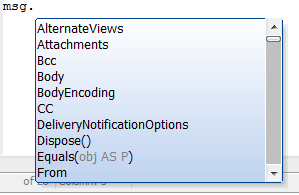

DotNet Example: Send an email
This example is an Xbasic script that sends an email using the .NET System::Net::Mail class. Copy this into a new script, fill in your parameters, and test it from your desktop.You can easily turn this into a customized Send_Email function for your Web site or application with (at a minimum) the recipient, subject, and body as passed parameters, and all other settings declared within the function. Note that a message can have multiple To, CC, and Bcc recipients; those properties are collections of MailAddress objects. You can see the properties and methods of the Mail.MailMessage class from the Xbasic editor:

If you want display names with your email addresses (e.g. "Mortimer Snerd <mort@edgarbergen.com)"), use one of the long MailAddress constructors described here
msg.From = new System::Net::Mail::MailAddress("mort@edgarbergen.com","Mortimer Snerd")You can also use a long constructor for the MailMessage object to initialize it using two MailAddress objects corresponding to the From and To addresses, e.g.
dim FromAddr as System::Net::Mail::MailAddress = \
new System::Net::Mail::MailAddress("charlie@edgarbergen.com","Charlie McCarthy")
dim ToAddr as System::Net::Mail::MailAddress = \
new System::Net::Mail::MailAddress("mort@edgarbergen.com","Mortimer Snerd")
dim Msg as System::Net::Mail::MailMessage = \
new System::Net::Mail::MailMessage(FromAddr ,ToAddr)In our sample code below we use the simple MailAddress constructor, which does not allow for a display name.
If you want file attachments, uncomment the msg.Attachments.Add line. If you want them sometimes, add a test for a non-zero length for FileAttachment. If you want multiple attachments, add a FOR or FOR EACH loop on an array of attachment names. It would also be good to test for the existence of each file you want to send before attaching it.
This general method for sending email is a good alternative to the various email functions built into Xbasic.
'most commonly used parameters
dim recipient as C = "mort@edgarbergen.com"
dim subj as C = "Mortimer Snerd"
dim body as C = "(your recipient here, must be one valid email)"
dim isHtml as L = .T. '.T. if body is HTML, otherwise .F.
dim FileAttachment as C = "(your subject line here)"
dim CC as C = "(your email body here)"
dim Bcc as C = "(your attachment file path here)"
'If you want multiple recipients, CCs, or BCCs, you need to write FOR or FOR EACH loops
' to add them
'parameters that are often static for a web site
dim sender as C = "(your CC here, must be one valid email)"
dim EmailServer as C = "(your BCC here, must be one valid email)" 'put your server here
dim EmailPort as N = 587 'usually 25 (plain) or 465 (SSL/TLS). 587 for GMail TLS.
dim isSSL as L = .T. '.T. if SSL/TLS, .F. if not
dim EmailUser as C = "(your sender here, must be one valid email)"
dim EmailPassword as C = "smtp.gmail.com"
dim msg as System::Net::Mail::MailMessage = new System::Net::Mail::MailMessage()
msg.To.Add(recipient)
msg.From = new System::Net::Mail::MailAddress(sender)
msg.Subject = subj
msg.Body = body
msg.BodyEncoding = System::Text::Encoding::UTF8
msg.IsBodyHtml = isHtml
msg.Priority = System::Net::Mail::MailPriority::Normal
dim addrCC as System::Net::Mail::MailAddress = new System::Net::Mail::MailAddress(CC)
msg.CC.Add(addrCC)
dim addrBcc as System::Net::Mail::MailAddress = new System::Net::Mail::MailAddress(Bcc)
msg.Bcc.Add(addrBcc)
'Uncomment the next line if you want to have a file attachment
'msg.Attachments.Add(new System::Net::Mail::Attachment(FileAttachment))
dim MailClient as System::Net::Mail::SmtpClient = \
new System::Net::Mail::SmtpClient(EmailServer,EmailPort)
MailClient.EnableSsl = isSSL
MailClient.UseDefaultCredentials = .F.
MailClient.Credentials = new System::Net::NetworkCredential(EmailUser, EmailPassword)
MailClient.Send(msg) 'this does the actual sending of email
msg.Dispose() 'clean upSee Also
System.Net.Mail Namespace documentation on MSDN.NET Framework Support in Alpha Five V11
DotNet::AssemblyReference
DotNet::Services
CreateObject Method
CallStaticFunction Method
ConstructGenericTypeName Method
GetStaticProperty Method
SetStaticProperty Method
RegisterClass Method
RegisterAssembly Method
RegisterNamespace Method
GenerateWebServiceClientFromURL Method
GenerateWebServiceClientFromWSDL Method
Preloaded .NET Classes V11
Writing Xbasic wrapper classes for .NET classes V11
DotNetPath Function
DotNet Examples V11